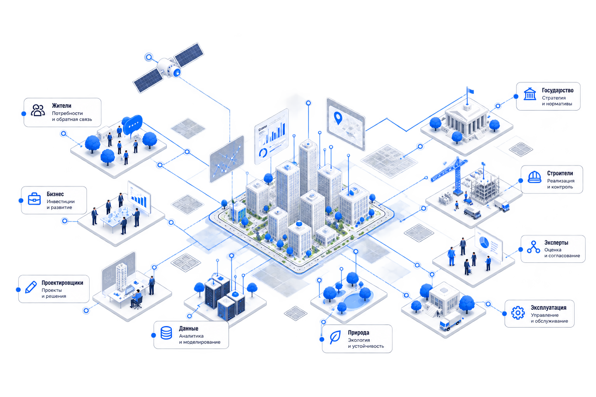
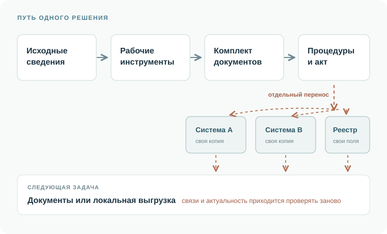
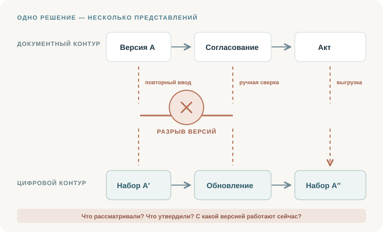
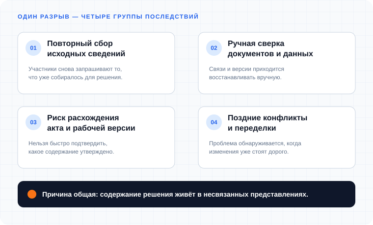
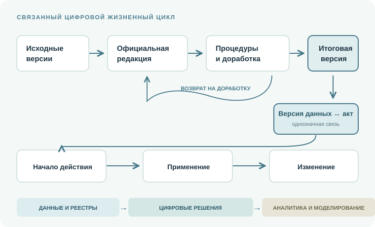

Новый стандарт управления развитием городов и территорий.Единая цифровая среда, где данные и процессы работают в одном контуре, как один механизм.

Суть за одну минуту
Зачем что-то менять?
Цифровые системы и электронные услуги уже существуют, но работают точечно и не решают фундаментальных проблем.
Концепция предлагает исправить не отсутствие цифровизации, а разрыв между подготовкой, утверждением и дальнейшим использованием градостроительного решения.
01 / 04 · Жизненный цикл решения сейчас
Множество несвязанных систем и документов
Проектировщик собирает исходные сведения, готовит проект и формирует комплект документов. Его согласуют, обсуждают и утверждают. Затем содержание отдельно переносят в разные информационные системы, а следующий участник процесса снова получает документы или локальную выгрузку для своей задачи.

02 / 04 · Корневой дефект подхода
Теряется связность, появляются ошибки и лишняя работа
Документный комплект и данные в системе становятся разными представлениями одного решения. При каждом переносе приходится восстанавливать связи и сверять версии: что именно рассматривали, что утвердили актом и с каким содержанием работаем сейчас.

03 / 04 · Последствия разрыва
Разрыв усложняет и удорожает работу
Участники заново запрашивают исходные сведения, вручную сопоставляют документы и данные и повторяют проверки. Расхождение акта и используемой версии или конфликт с параллельными проектами может обнаружиться уже тогда, когда решение придётся существенно переделывать.

04 / 04 · Что можно изменить
Юридически значимые цифровые решения
Концепция предлагает проверять, согласовывать, обсуждать и дорабатывать официальную проектную редакцию в общем цифровом контуре. Уполномоченный субъект своим актом утверждает конкретную итоговую версию. Затем её можно применять и изменять без повторного восстановления содержания.

Что предлагает концепция
Один жизненный цикл — от проекта до следующего изменения
Концепция связывает воедино содержание решения, процедуры, правовое основание и дальнейшее использование данных. Для этого не нужна одна платформа: достаточно, чтобы разные системы и рабочие инструменты могли взаимодействовать в общем официальном контуре по единым правилам.
01
v1v2
состав изменений сохранён
Каждое решение — конкретная редакция данных
У официальной проектной редакции есть устойчивый идентификатор. Известно, кто и когда её подготовил, из каких данных она создана и что изменилось по сравнению с предыдущей версией.
02
проверкаv2согласованиеобсуждение
доработка возвращает новую редакцию
Все процедуры явно связаны с редакцией
Проверка, согласование, обсуждение и доработка проходят в официальном цифровом контуре. Замечания, ответы и результаты проверок сохраняются вместе с той редакцией, к которой они относятся. Связанные данные и формализованные правила помогают увидеть противоречия до утверждения.
03
итоговая редакция↔акт
однозначная проверяемая связь
Акт утверждает конкретную итоговую редакцию
Уполномоченный орган принимает акт или другое предусмотренное законом решение и однозначно связывает его с итоговой редакцией данных. Юридическую силу создаёт акт — не загрузка в систему, идентификатор или действия AI.
04
проектдействуетзаменена
Всегда достоверный статус решения
Контур различает проектную, находящуюся на согласовании, утверждённую, действующую и замещённую редакции. Видно, какая версия действует сейчас, на каком основании и с какой даты. Дата принятия решения и начало его действия могут не совпадать.
05
↻источник23.09.2026
дата актуальности и история
Сведения обновляются там, где возникают изменения
При любых изменениях — территории, условий, данных или решения — ответственный участник актуализирует соответствующие данные. Для них сохраняются источник, дата актуальности и история изменений.
06
v2картатаблицачертёжзадача
одно содержание — разные применения
Данные используются повторно
Подтверждённые сведения становятся основой следующего решения, услуги или проверки — без повторного ручного переноса. Цифровой документ, карта, таблица и чертёж — это разные представления одной и той же редакции, а не отдельные копии.
Главное — всегда можно однозначно установить, что проектируется, что утверждено, что действует сейчас и на каком основании — а затем использовать то же содержание в следующей или параллельной задаче.
Что изменится в работе
Два примера: как связанные данные могут изменить процесс
Они показывают, как проектное решение можно раньше проверить и согласовать с другими изменениями территории.
Условные примерыЭто условные примеры, а не реальные кейсы или описание действующих сервисов.
01Пример 1 · Согласование проекта
Ошибки, противоречия и несоответствия в проекте выявляются автоматически на ранних этапах
01
Ситуация
Проектировщик направляет в официальный цифровой контур рабочую редакцию проекта планировки. Заранее известны её состав, исходные данные и отличия от предыдущей версии.
02
Ранняя проверка
Формальные правила сопоставляют проект с действующими границами, регламентами, нормативами и связанными решениями. Возможное противоречие видно до утверждения, но проверка не принимает решение за специалиста.
03
Результат
Система формирует список замечаний, с которым уполномоченный орган возвращает документацию проектировщику. Каждое замечание связано с объектом, правилом и исходными данными. После доработки появляется новая редакция, а история проверки сохраняется.
Проект изменения участка рассматривается вместе с его последствиями
01
Ситуация
Для земельного участка меняются параметры застройки. В цифровом контуре это ещё проектная версия, а не уже принятое решение.
02
Связанные последствия
Предложение сопоставляется с действующими и готовящимися решениями по транспорту, инженерным мощностям и социальной инфраструктуре. Система заранее показывает, где нужны дополнительные изменения или согласования, и уведомляет участников до подготовки полного пакета документов.
03
Результат
Каждый участник готовит и согласует связанную проектную версию в своей зоне ответственности. Для версий сохраняются статус, источник и история. Автоматические проверки помогают заметить потенциальные сложности, но не заменяют полномочия органов, необходимые процедуры и отдельные правовые акты.
Переход — не замена всех систем, а последовательное развитие общего контура
Начинаем с главного разрыва: официальное решение должно пройти весь путь — от подготовки до применения — как определённая версия данных. Затем расширяем состав связанных сведений и только на проверенной основе развиваем аналитику и моделирование.
01Этап
Связать решение с его цифровой версией
Вводятся общие правила для версий, статусов, источников и обмена данными. Акт однозначно связывается с утверждённой версией, а приоритетные действующие сведения переносятся без потери происхождения и истории.
РезультатРешение можно использовать дальше без повторного ручного переноса между документами и системами.
02Этап
Расширить связи и актуализацию
Подключаются дополнительные данные и материалы обоснования, межотраслевое согласование, инфраструктурные сведения, обсуждение и контроль исполнения решений.
РезультатСвязанные изменения территории готовятся и проверяются в общем контексте.
03Этап
Развивать аналитику и моделирование
На проверенных данных развиваются отраслевые модели, сценарный анализ, прогнозирование и аналитика реализации. AI-сценарии проходят отдельные испытания и применяются с контролем человека.
РезультатПоследствия решений можно оценивать раньше и на более полной картине территории.
Как организовать переход
Переход опирается на существующие ГИСОГД, реестры и профессиональные инструменты. Для них задаются общие обязательные правила совместимости, а миграция и временное параллельное ведение ограничиваются по сроку.
Инструменты, обучение и поддержка должны появляться вместе с новыми требованиями. Временное двойное ведение допустимо с конечным сроком и правилами устранения расхождений.
Эффект каждого этапа проверяется на конкретных процессах с учётом затрат на миграцию, интеграции, обучение, эксплуатацию и безопасность. Пилоты проверяют способ реализации, а не откладывают переход на неопределённый срок.
От общего цифрового контура — к отраслевым моделям
Общий цифровой контур создаёт основу для следующего шага: транспортные, инженерные и другие специализированные модели смогут использовать связанные данные о территории и возвращать результаты расчётов в общий контекст подготовки решений.
Что предстоит сделать
01
Связать транспортные, инженерные, социальные, экологические и другие модели с согласованным описанием территории.
02
Наладить получение сведений из разных источников и определить для каждого набора данных поставщика, правила доступа и обновления.
03
Обеспечить совместное использование данных без потери их смысла, происхождения, версии и статуса.
Задача не в том, чтобы собрать все данные в одной системе. Нужно обеспечить их совместное использование для конкретных решений — с понятным происхождением, актуальностью и ответственностью.О развитии Концепции ↗
Поставщики данных
Ведомства и реестры
Инфраструктурные организации
Региональные и коммерческие системы
ИсточникВерсияАктуальностьДоступ
Связанные данные о территорииобщие идентификаторы · семантика · проверка · история
Отраслевые модели
Транспортная модель
Инженерная модель
Другие отраслевые модели
Результат
Последствия, сценарии, ограничения и обоснования возвращаются в контекст подготовки решения.
Модели получают связанные данные о территории и возвращают результаты в общий информационный контур. Единая платформа или одно физическое хранилище не требуются.
Основные сложности
01
Разные модели описания
Идентификаторы, характеристики, детализация и границы объектов различаются между системами.
02
Неравномерное качество
Полнота, точность, территория покрытия и частота обновления данных неодинаковы.
03
Доступ и ответственность
Нужно определить права использования и ответственность за предоставление и актуализацию сведений.
04
Статус результатов
Расчёт модели необходимо отличать от исходных данных, проектного намерения и утверждённого решения.
Участие
Поддержите Концепцию своим опытом
Если вы работаете с градостроительными решениями, данными или информационными системами, поделитесь практическим опытом, замечаниями и идеями.
01
Практический случай
Где разрыв между документами, данными и системами приводит к повторной работе, задержкам или ошибкам.
02
Замечание к Концепции
Что в предложенном подходе не учтено, сформулировано неточно или требует дополнительной проверки.
03
Предложение по развитию
Какие правила, данные, процессы или механизмы совместимости стоит предусмотреть.
Следующий этап
Предложения помогут уточнять Концепцию и проверять её на реальных процессах. Следующим этапом мы планируем готовить предложения по развитию градостроительного законодательства, включая возможные изменения в Градостроительный кодекс РФ.
Каждое предложение будет рассматриваться по существу. Отправка предложения не означает его автоматического включения в Концепцию или будущие законодательные инициативы.
Зачем мы это предлагаем
Что мы предлагаем
01 / Кто мы
Коллектив из представителей субъектов РФ, архитекторов, градостроителей и девелоперов предлагает новые принципы цифрового управления развитием территорий.
02 / Зачем
Цель — улучшить градостроительные процессы, сократить инвестиционно-строительный цикл, повысить качество градостроительных решений.
03 / Как
Мы видим верный путь в согласованной концепции использования данных и её поэтапном внедрении в практику, в том числе через изменения нормативной базы.